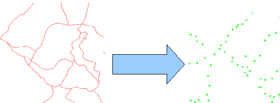

Polygon or lines to points
From a given vectorial layer of polygons or lines, creates a point vectorial layer with all those vertices of the original layer.

A cluster tolerance is needed, to snap all those points in the specified radius in the same vertex.